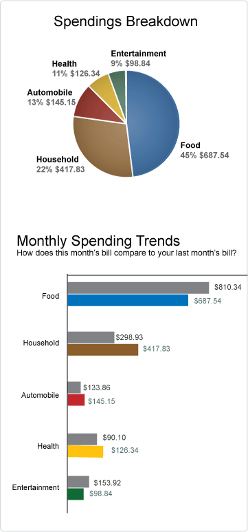
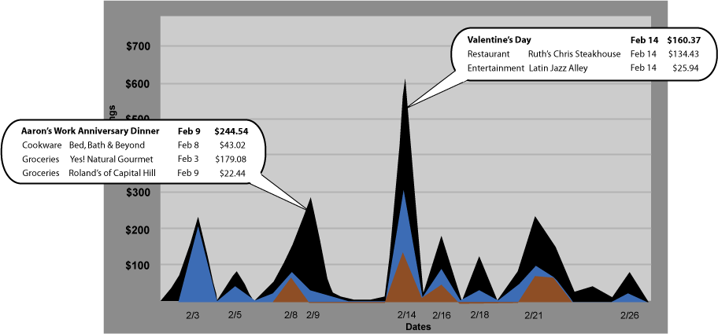
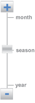

Summary
Summary| Research |
Synthesis |
Design |
Solution |
|
Presentation
02
|
Solution |
03 Final Website |
1st Choice Creditcard website powered by BillMaster Technologies
We created three main pages: a main statement page, a spending trends page, and a pay bill page.
Walkthrough of viewing a statement
1. Users can see their current statement purchases organized by categories.
2. A few purchases are highlighted with a star to denote that these are not regular purchases based on the user's past spending history. Users can click on the star to get more information about the event associated with the purchase. (To see this in action, click on the first star in the list next to "Yes! Natural Gourmet").
3. A popup appears with the event title and a link that takes users to the trends page (which was demonstrated in the Spending Trends walkthrough).
4. There are two graphs on the right to help users meaningfully categorize their spendings and easily compare this month's spending with last month's.

Walkthrough of viewing spending trends
1. After clicking on the star described above on the main statement page, the user can click on "See trends" to view the spending trends page. This page shows a graph representing the user's overall spendings (both total and by category) over time.

2. Events are marked on the graph itself, and the user can see the breakdown of purchases and overall cost associated with the event.
3. Users can use the scale on the right to change the view of the graph from a month view to a season view to an annual view, giving users control over the perspective when viewing their spending history. Our current demo allows users to choose between monthly and seasonal views.

Walkthrough of paying a bill
Walkthrough:
1. After the user hits the "pay bill" button on the main statement page, he/she is taken to a new page that shows the statement amount, the due date, where the money is being transferred from, and when the payment will be posted. The system remembers information about the user, such as payment patterns in terms of when the user prefers to pay the bill. For example, if the user typically pays the bill two days before the statement is due, this option will automatically be chosen as the default.